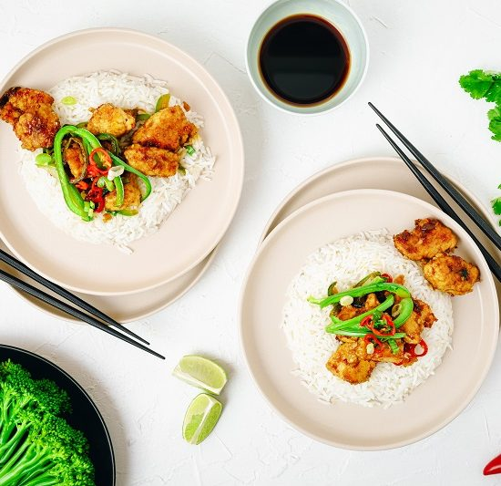

This dish is traditionally quite high in fat and salt. This makeover is loaded with taste and texture but much healthier. It's all in the garnish with this dish.

Read the entire recipe from start to finish. Trust us! You'll be more familiar with the steps and cooking the dish will be a METHOD stroll in the park. Before you begin give the vegetables a quick rinse.